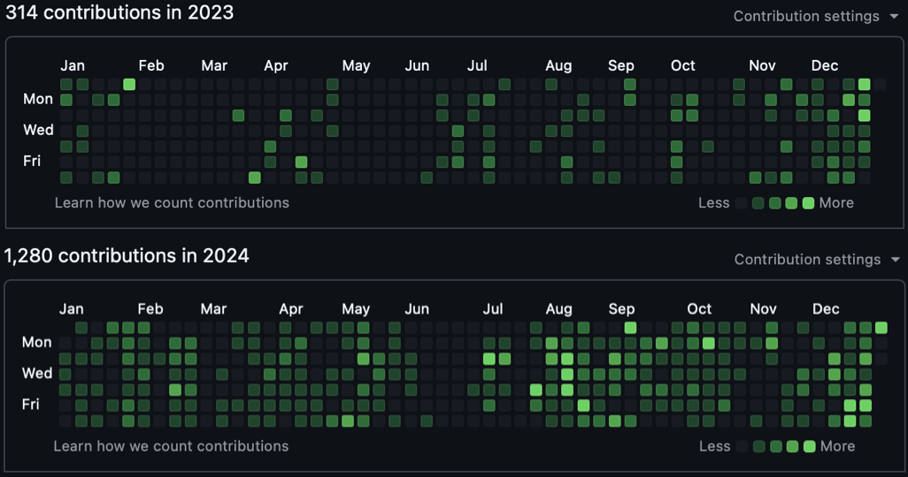

A slightly structured log of miscellaneous thoughts.
What I'm Looking Forward to in 2026
December 29, 2025
I used to try and make predictions for what was going to happen in the coming year. I no longer try to do this for a couple of reasons. First, things have been evolving at a rapid pace, not only technologically but also economically. When incentives and developments co-evolve quickly like this, it becomes difficult to clearly envision how exactly the future rolls out. This is the smaller bit. You could also call this a skill issue; I am okay with this characterization. The second, more prominent reason is that it makes me root for or against events as they unfold. One of the last things I want to see on my timeline is someone talk about how they got a prediction for a negative event right. Perhaps worse than this is reading a post from someone celebrating advances they predicted as if they were the ones making them happen. So, instead of predicting what will happen, here's a list of areas of development I'm interested in following.
Action-controlled world models, and their price/quality scaling
I recently wrote an essay on Digital Worlds and why I think they will be crucial on the path for us to deploy physical agents in constrained environments. In 2026, I'm particularly interested in scaling laws for such models with regard to both quality and price efficiency. Right now, most of these models are really large and expensive to run inference on. If we want to use them as simulators to train RL agents in, we need to be able to step through the environment really fast and inexpensively without compromising on quality (and, in fact, improving quality at lower prices).
If language models are any indication of how market forces (and technological development) can push for model efficiency, we are in for a treat in this space over the next couple of years. In 12 months, we went from having a model like o3 that can do really well on the ARC-AGI benchmark at an insanely expensive price point to GPT-5.2, which not only outperforms o3 on this benchmark but does so at 0.25% of the cost. If we expect to see intelligence/price improvements at even a fraction of this pace, I think we will end 2026 with models like SIMA-2 that are increasingly trained in environments generated by world models. I think this is extremely exciting.

GPT-5.2's result on ARC-AGI-1 at a fraction of o3's cost, 1 year later. Source: ARC Prize (with gpt-5.2's result scribbled onto it by me)
A minor aside on world modeling as a simulation technique: I've been seeing a lot of criticism on X talking about whether world-model-type simulators make any sense if the amount of data required to train them is equivalent to the amount of data required to run behavior cloning to train agents themselves. I think this is a fair question to be asking, but I still maintain my position that world models are crucial.
First, we have a ton of internet-scale data from embodied agents without any action information (which we can still learn to approximate, as shown in Genie). If we can train gigantic foundation models that utilize this data, we can amortize the cost of training agents over the additional data required to generalize to their specific domain environments.
Second, I think this is somewhat similar to the debate about using reinforcement learning in language models: a lot of studies show that pass@k on base models can yield similar results to RL-trained models, but the key point is that RL reshapes the distribution so the model makes the right moves without needing to sample k times. Similarly, instead of needing to observe the correct "actions" X times in the real world, we can observe them a fraction of the time and use the simulator to generate additional experience that reinforces those behaviors, effectively trading expensive real-world interaction for cheaper simulated rollouts.
Scaling context windows
The context window of a language model is the number of tokens (chunks of characters) a model can process at once. The GPT-3.5 model that powered the launch of ChatGPT had a context window of 4,096 tokens, while newer (non-reasoning*) frontier models now operate at around the million-token scale. For example, OpenAI's GPT-4.1 supports up to 1,000,000 tokens of context, and Anthropic's Claude Sonnet 4 also supports up to 1,000,000 tokens of context. This is a 250x increase in 3 years. To make these numbers feel less abstract, OpenAI's own rule of thumb is that 1 token is about 0.75 words in English, so 4,096 tokens is about 3,000 words. That is roughly a single Harry Potter chapter. 1,000,000 tokens is about 750,000 words, which is in the same ballpark as holding the entire series in the context window at once.
The reason I'm excited for orders-of-magnitude increments to this is because: 1) it allows for models to have longer reasoning chains, 2) it will allow for greater multimodality, allowing for us to unify advancements across spacetime models, audio models, and language models by packing in an increasing number of diverse tokens into context, but more importantly 3) I have the intuition that in-context learning within extremely large context windows will be one of the biggest prerequisites to "continual learning"
Continual learning is the biggest buzz term in the LLM space since "reasoning," since it represents one of the biggest limitations that current models have: a lack of memory. Every time you open up a new ChatGPT window, it's like speaking to a new model. They have some memory features that allow the model to search through your chat history to "remember" things, but this doesn't really feel like a continuous process. My intuition for why continual learning is a function of context window size is simple: we know that in-context learning is highly data efficient (several orders of magnitude more efficient than training). I.e., if I tell a model something during my chat with it, it learns to leverage that new knowledge pretty quickly and efficiently within the same chat window. This is very different from training, where thousands of examples of a concept are required to distill it within the model's parameters.
There are several other approaches to solving this problem, but I think the most elegant one will be the least handcrafted and complex one. An effectively unbounded context window paired with a retrieval-and-compression layer (so the model can efficiently re-access relevant prior interactions) feels like the cleanest path toward something continual-learning-like. We'll probably need to hand-code ways to compress information and access it (searching through memories, storing latent representations of these memories, and so on) on the path there, but I think longer contexts will serve well in these pursuits too. Some folks from Google DeepMind and Anthropic seem to share this intuition with me.
Scaled deployment of end-to-end learned robots, and approaches to make safety cases for them
This one is close to my heart and very relevant to the work I do. When I first came across the idea of training a self-driving agent end to end, the same way we trained an image classifier in ~2019, it seemed like one of those simple-but-elegant, no-brainer ideas that made me wonder why I hadn't thought of this myself. At the time, very few people thought this was a good idea. Those who did (George Hotz, founder of Comma, and Alex Kendall, co-founder of Wayve, where I now work) seemed to think that it was the only solution to solving the long tail.
What was then a contrarian idea is now seemingly the consensus long-term solution, with Tesla rewriting their entire driving stack to an end-to-end system in 2023 and Waymo increasingly publishing work in this area. This design/training regime has now extended beyond self-driving to all sorts of robotics applications, with companies like Physical Intelligence, 1X, Dyna Robotics, NVIDIA, and countless others putting their eggs in this basket. This is a good thing, because it is the right philosophy to solve the intelligence problem central to embodied agents.
However, with this come some challenges. These models are stochastic, hard-to-interpret black boxes. Therefore, validating such systems and making safety cases for them is a novel challenge that is yet to be solved. I often see this problem extended to the limit, with vocal (they're always so vocal) critics claiming it to be intractable and therefore a dead end. I don't believe this to be the case, but it is definitely one that we don't have a consensus solution for.
I spoke to a safety engineer a few years ago who found it hard to wrap his head around statistical analyses for safety rather than structural ones. The analogy he drew to me was, "If I was going to say that a building is safe to live in, I would like to have mechanical and structural guarantees that it was safe. I wouldn't be able to make a safety case by saying the building hasn't fallen for 100 years and therefore will not fall." I completely agree with this statement, but I do think that there is signal to be drawn from the 100 years of structural integrity.
I have a few ideas on how I think we build towards solving these problems, but I will keep them for the workplace. How would you solve this problem?
Training data mixes for embodied agents: egocentric data, teleoperated data, synthetic data, and how this plays out
One of the most interesting and important aspects of developing learned robot agents is figuring out the data mix used to train a policy. At the beginning of 2025, there was one predominant type of data collection method: teleoperation. Robotics companies hired teleoperators to perform tasks with the robot hardware using controllers (which have taken many different forms, from PlayStation controllers to VR controllers), and then used this training data with the intention to clone this behavior via a learned robot policy. Now, close to the end of the year, a few new types of data sources have emerged. Synthetic data is data generated via the kinds of techniques discussed in all of my world-model-related rants (above in this essay, and in this essay). Egocentric data is essentially videos of humans performing tasks that we want the robot to be able to perform. By itself, egocentric data is not very helpful, since the hardware (the human body) is quite different from robot hardware. However, we're starting to see that with clever sensor setups and intelligent selection of what parts of the training process this kind of data is used in, it can demonstrably boost model performance.

Human-to-robot transfer as an emergent property of diverse pretraining. Source: Physical Intelligence
I think all of these forms of data are extremely complementary and will be part of the recipe that produces economically valuable robot policies. I'm super excited to see how these (and potentially more!) different forms of data collection play together.
Packing decades into years: extrapolating from 2025
2025 packed in a ton in 12 months. At the start of the year, the AI bubble was going to pop and US capital markets took a fall after DeepSeek released and open sourced R1. After the GPT 5 release, critics declared the wall had been hit and the bubble was just about to pop. Andrej Karpathy, Rich Sutton, Ilya Sutskever, and other legendary AI researchers came out and said that the current paradigm produces slop and that we have to look elsewhere for AGI. Later, Anthropic released Opus 4.5, OpenAI released GPT-5.2(+codex variants) and Google released Gemini 3 Pro. All of these models destroyed benchmarks, and to me Codex + Claude Code feel like really senior programming colleagues. Just a few days before the new year, Karpathy tweeted that he's "never felt this much behind as a programmer" and that "Clearly some powerful alien tool was handed around except it comes with no manual and everyone has to figure out how to hold it and operate it, while the resulting magnitude 9 earthquake is rocking the profession", very strongly contradicting his prior claim about these models producing slop.

Karpathy's reflection on the seismic shift in programming
I expect every year from here on out to pack in increasing amounts of advancement and excitement. What a time to be alive!
*I mention non-reasoning models here because we do not actually know the full length of internal reasoning chains for some frontier systems, so the effective "total" context plus hidden reasoning budget is not always clear.
A Decade for a Century
December 19, 2025
Sparks of Artificial General Intelligence were first reported when OpenAI released GPT-4 in March 2023. 2 years and several months later, some may say we are yet to see the flames. Whether autoregressive language models are a straight shot to superintelligence or an off ramp on the journey there is a highly overplayed debate that I will abstain from engaging in. It is, however, increasingly obvious to me that the sparks we saw were symbolic of a new chapter of human pursuit.

In 2023, the world woke up to the realization that 1. We have the compute and infrastructure to run ungodly parallel workloads consuming tens of gigawatts of energy, and 2. The learning algorithms we have (neural networks, and more particularly transformers), are incredible at learning low-loss representations of petabytes of data while optimizing for a generalized objective. AlexNet 2.0.
Since then, we've seen similar recipes produce captivating results in a number of unique domains. Image generation models like Midjourney, video generation models like Runway's Gen-4.5, generalist robot policies from Physical Intelligence, human-like self-driving models from Tesla and Wayve, all apply different variations of the same sets of techniques. As a consequence of this technology, the world today is very different from the world 10 years ago (despite the fact that our primate brains are great at normalizing exponentials).
When GPT-4 was released, a bunch of images like the following went viral.

The implication was that the jump from GPT-4 to GPT-5 would represent an increase of several orders of magnitude in the model's parameter count. While the number of parameters in the GPT-5 model is unknown to the public, I'd wager that it is roughly of the same order of magnitude as its whole number predecessor. This is not to say the models aren't an order of magnitude better. There are a number of different evaluations that demonstrate the exponential improvement of models at performing useful tasks. One that I particularly like is METR's "Measuring AI Ability to Complete Long Tasks," which benchmarks models based on how long the tasks they can autonomously complete would take human experts. The length of tasks models can coherently perform to a high degree has grown astoundingly.

Task completion time horizons have been doubling every ~7 months. Source: METR
We haven't actually entered the next era of truly gigantic training runs yet: we don't have enough purpose-built datacenters, and even the biggest clusters we do have are bottlenecked by physical infrastructure (power, cooling, networking, energy), and software infrastructure (fault-tolerant distributed training orchestration, high-throughput data pipelines, robust checkpointing and recovery). Most of the gains above have come from squeezing more out of roughly the same hardware: better kernels and architectures (flash attention, GQA, MLA, MoE and more), smarter training setups with synthetic data and reinforcement learning, and a willingness to spend far more compute at inference time instead of only during model training. There's no reason we can't build a "2024-tier" model on "2020-tier" hardware in 2025 using modern recipes; you can already see this in hobby projects that replicate frontier behavior in small models on aging GPUs.
The floor is dropping on the cost per unit of intelligence while in the background the ceiling is rising on how much compute and capital we can throw at the problem at once. Bigger, better infrastructure doesn't just let us run single massive jobs, it lets us run many more jobs, ablations, and wild ideas in parallel. The compounding of those two trends will ensure that the exponential stays exponential and that this idea extends beyond language-driven domains like software engineering.

Source: State of AI Report 2025, Air Street Capital
In the 1880s, early electric lighting felt like the whole story. Bulbs and arc lamps were a visible miracle (something the general public could see and feel the impact of themselves) and that's where attention and capital flowed. But the real revolution wasn't the bulb; it was the grid. The hard, unglamorous work of laying copper, building generators, standardizing voltages, and wiring cities turned electricity from a spectacle into infrastructure. Once the grid existed, the world reorganized itself around it: factories, cities, communication, transportation, healthcare, even human sleep cycles changed. We then built infinitely many more visible miracles with this infrastructure and a matured understanding of how we can optimally use it.
A century later, the same story played out again with the internet. In the 1990s, everyone thought the revolution was websites. The bubble inflated around shiny domains and digital stores like pets.com. But the real transformation came later, when the boring parts matured. Servers, fiber optics, data centers, protocols, software and cloud infrastructure rewired the entire economy. The bubble popped, but the foundations it left behind built everything we use today.
We're in a similar place now with synthetic intelligence. There's a lot of focus on bulb development (which is fair and warranted) but not enough people removed from the frontier are thinking about the grid. The real story of the 2020s will be the world we build for our synthetic counterparts to inhabit.
Over the next decade, we'll build the infrastructure and improve algorithmic data efficiency to lay the foundation for the next century.
Digital Worlds
December 16, 2025
One of the biggest bottlenecks AIs will come up against are the physical limitations of the "real" world. Dario Amodei talks about this extensively in his Machines of Loving Grace essay: intelligence alone doesn't bend the laws of physics. Even if AI is able to think at the speed of the electrons powering it, in order to discover new things in the real world, it needs to be able to interact with it. These interactions are subject to fundamental constraints of the physical world. As a super simple illustration of this problem, think of an agent whose job is to find a cure for cancer. The scientific methods for testing whether a proposed treatment is safe and effective are time-consuming and may put participants at risk. For example, the typical FDA approval process for a new drug takes approximately 8-10 years from initial testing to approval. Similar challenges arise in robotics, where robots must interact with the physical world, particularly in safety-critical systems.
How do we overcome this limitation?
By building really good models of the world. If we can simulate the dynamics of the world to a precise enough degree that results in the simulator correspond to the same results in the real world (within a degree of mathematical precision), agents can propose, test, and verify a lot more solutions in the simulator, subject only to the latency and fidelity of said simulator.
This is not a new idea. We've built simulators pretty much since we've had computers, and they've enabled us to build great things. However, we're just about getting to the point where we have the infrastructure, domain knowledge, and general-purpose learning algorithms to build high-fidelity, data-driven simulators of the world. Taking the self-driving space as an example: roughly all simulators that were actually used to train/test driving agents were physics simulators. These simulators, much like game engines, are designed with a human model of real-world physics. For example, a specified gravitational force is applied to objects in the simulator, frictional coefficients are specified for surfaces and tires, and so on. These kinds of simulators are a classic case of Polanyi's paradox. While we think we know and can specify all of the physics necessary to perfectly simulate a driving environment, we miss out on the subtle, tacit regularities of reality that we don't even know to write down. Lucky for us, we no longer have to rely (purely) on these kinds of simulators. Instead, we can learn models of the world from data.
So what is a world model? A world model takes in a state of the world, and can predict what the next state of the world will be given an action; in other words, a learned transition function. Going back to the self-driving example, a world model would be a model that takes in as input the state of the scene around a car (this can be a combination of different sensory inputs: camera/imu/radar/lidar), an action, and then outputs what the next state of the scene around the car would be. A great example of this is Wayve's GAIA-3. This model takes as input video, is conditioned on an action, and produces future frames of the video.
There's been a huge interest in building video world models, and the commercial viability of generative media has made it easy to justify the investment. But the end game here is not content generation; that's just the visible surface of something deeper. These models learn internal representations of how the world behaves, and that latent world knowledge is exactly what robotics wants. As our feeds are flooded with sloppy Sora and Veo-generated video and our parents' generations suffer defeat at the hands of the misinformation monster, the labs pumping out this content will be trying to transfer the internal world models learned by these generative models to generate high-fidelity robot training grounds. It's no surprise that Google DeepMind built SIMA 2, an agent that can play, reason, and learn inside virtual 3D worlds, and trained it within Genie-generated environments. SIMA 2 can self-improve through trial-and-error entirely without human feedback, paving the way for agents that learn and grow with minimal human intervention. More recently, DeepMind demonstrated using Veo as a world simulator to evaluate Gemini Robotics policies, validating predictions against 1600+ real-world trials.

Genie 3: A large-scale foundation world model. Watch on YouTube
While action-conditioned visual world models are an extremely promising line of work, the physics of the world isn't purely visual. In the real world, we feel objects, experience contact forces, and many of these physical concepts aren't purely visually observable. I recently read an interesting paper from ETH Zurich, Robotic World Model, that trained a robot in a learned world model where the model predicts the robot's physical state (joint angles, velocity, torque, and so on) as well as privileged information like contact forces. We have proof that these kinds of models work in a model-based reinforcement learning setting, and we're developing really good visual/sensory world models. I'm super interested in lines of research that combine these two concepts to build more holistic world models for physical AI agents to be trained in.
So does this mean everything will be trained inside learned world models?
Not necessarily. Learned models shine in data-rich, visually grounded settings; hand-crafted simulators shine where the mechanisms are known but the data isn't. The key is finding the right balance between them to bootstrap progress. Traditional simulators are what got us to the dance: Waymo, Cruise, and other self-driving companies built compelling systems using physics-based simulators. Amazon Robotics deployed over 750,000 robots that were heavily tested in hand-crafted environments, with analysts estimating their advanced robotics technology could generate annual cost savings exceeding $10 billion by 2030. But as these systems operate in the real world, they generate exactly the kind of observation data that learned world models need. Hand-crafted simulators give us safe places to get started; learned models let us capture the long tail of reality that we could never specify by hand. You use one to bootstrap the other. We need to build digital worlds for different processes: biological, neurological, physical, chemical. Some will be carefully designed from first principles, some will be learned from data, and increasingly, they'll be hybrids. But as data constraints ease and learning algorithms grow more efficient, the balance will shift: neural simulation will become dominant. These are the training and testing grounds for agents before they act in our world.
The (Human) Bitter Lesson
March 19, 2025
Rich Sutton, artificial intelligence legend and co-founder of the field of reinforcement learning (and newly one-half of a Turing Award), wrote an essay titled The Bitter Lesson where he expresses that the bitter lesson he's learned to swallow over his career in AI is that "general methods that leverage computation are ultimately the most effective, and by a large margin."
The implication of the bitter lesson is simple: whether it's via Moore's law or Huang's law (the specifics don't really matter since an exponential can be interpreted as infinitely many overlapping sigmoids), we're consistently advancing the amount of computational power available, and the best techniques to build artificial intelligence will be those that can improve proportionately with an increase in computational resources.
Therefore, what we want are algorithms that are compute-hungry and for which we can establish laws of scaling. We've learned that some techniques scale better when provided with a lot of data, a lot of time, and a lot of FLOPs. I want to point out here that this bitter lesson extends beyond our synthetic successors to our organic peers as well.
Let's start by considering improvement in sports. You can generally break down most sports into a combination of endurance, strength, speed, and technique/skill. Oftentimes, athletes treat these as discrete properties, but there are indeed relationships between them that allow for optimal scaling. We can think of skill, and more specifically an athlete's technique, as the algorithm, and the sum of their endurance, strength, and speed (there are other factors too, such as balance, flexibility, resilience, but let's keep it concise for now) as the compute equivalent in this system. The best athletes in the world are those whose technique allows for their performance to improve consistently with improvements in their attributes (compute). For example, a professional athlete who plays a sport like tennis or squash that involves explosive movements and constant changes in direction will reach a point of diminishing returns if their technique involves wasted movement and excessive strain or friction on their joints. Someone nimble on their toes can sustain a higher computational gain than someone who is flat-footed and makes aggressive contact with the ground.
The difference between the human body and computer chips is that the scaling of the former is much more bounded than that of the latter. There is some theoretical limit (based on the athlete's genetics, diet, etc.) to how much output they can produce, although we should probably consider this an area of weakness as a species (athletes today are better than athletes from a hundred years ago, but our rate of improvement is measly compared to computers). Instead of focusing solely on humans' inherent athletic ability, we can focus on an individual's output. That is, we might not be able to improve FLOPs, but we most certainly can improve the total FLOP budget by spending more time in the gym and focusing on recovery.
All of the comparisons drawn above can be mirrored with the mind as well. We might not be able to improve our mental capacity significantly (again, we really should be figuring out how to), but we can improve our total compute budget by doing more things, staying consistent, and growing our output while adapting to methods that promote compute-optimal learning (spending one hour building something from scratch may be more valuable than spending ten hours reading about how to build that thing). We also want to avoid things like burnout and keep the learning process stimulating.
We're bitter-lesson learners as well, but our ability to scale our compute budget is limited. How can we lift this burden? We can make small advances by improving lifestyle choices, but that won't get us close to the rate of improvement of our silicon successors. What kinds of biological and neurological advances will allow us to keep up with scale? What techniques should we employ for the tasks we fulfill? After all, we want to build synthetic intelligence to help us live better lives, not so that we can rest our burdens on their backs.
2024 in hindsight
December 27, 2024
Unless you occasionally choose to operate at a significant proportion of the speed of light, the way you experience each year of your adult life should feel temporally alike. Despite this fundamental constraint, many claim that the rate at which you experience life "speeds up" after a certain age. Some claim that this has to do with a reduced frequency of novel events, while other work argues it has something to do with neurodegeneration and a reduced efficiency in visual perception. In supporting either one of those points of view, I would be well out of my depth.
Regardless of the cause (or existence) of such phenomena, I thought it might be a good idea to write out a fresh recounting of the year I just experienced before my brain undoubtedly starts its process of confabulation.
Career
I started the year continuing to grow in my role at Motional, where I learned and built some interesting things. I received invaluable guidance on how to go from writing scrappy code with copious technical debt creation to being able to design reliable (reasonably) large scale systems that generate slightly less debt. I used this guidance to architect and implement a multi-stage ML system that aimed to automate the operational/engineering processes of detecting and diagnosing failures across the autonomous vehicle fleet. Building something that processed tremendous amounts of multimodal data was a great learning experience.
On a related note, I was invited to be a reviewer at the ACM SIGCHI Conference on Automotive User Interfaces and Interactive Vehicular Applications (AutoUI) this year. This was a novel experience that I really enjoyed and learned a lot from - particularly about the current state of research in automotive human-machine interaction.
Eventually, my time at Motional was cut short due to restructuring at the company. Nonetheless, I'm grateful for what I learned there and the people I got to work with. Shortly after this, I started a new role at Intersystems Corporation in Cambridge, MA.
Programming
I spent a good amount of my "free time" building independent projects this year. With some of these, the focus was the process. I built things with the objective to learn the skills necessary to build them. Others were built with the intent to produce real value. I've listed some of these from each category below.
Educational
- Character-level GPT
- I trained an autoregressive decoder only model on all the Harry Potter books and got it to generate somewhat context-coherent text. I built the transformer and all of its components "from scratch" in PyTorch.
- Diffusers
- I revisited Computer Vision as a topic, with the goal of being able to build a diffusion model from scratch (thanks to a lot of help from Jeremy Howard and Fast AI)
- In notebooks, I experimented first with smaller things (resnets for classification), extracted components from this code into a small "from scratch" (in PyTorch) vision library and worked my way up to implementing Denoising Diffusion Probabilistic (and Implicit) Models
- Vision applications
- I had experience building real-world deployed ML (albeit classical) applications, and I had now gained some new vision skills. To put these together, I built a few different things. Of note:
- I built a real time detection streaming application that would detect faces in frames of a live stream and present them to a client. With this one, I learned about WebRTC and improved my understanding of asynchronous systems.
- I also built a post-processing cloud service that would take in video data (for example, video logs from a real world robot) and identify features from frames of the video. With this one I developed some architecture/infrastructure skills. I worked with Kubernetes and a suite of AWS services (EKS, Lambda, SQS message queues)

GitHub contributions in 2024 compared to 2023. I'm aware this isn't an ideal metric to optimize for, but I'm happy there was an increase in output.
Larger, more intentional projects
I am yet to "ship" any of the projects in this category, but these were developed (or are being developed) with the intention of producing real value. I'm going to follow up with more detailed Essays individually describing these projects, but for the sake of documenting everything of significance I did this year in one place, I built:
- An educational companion for early educational support. Think tamagotchi in a 3D world, but powered with a speech to speech AI pipeline, and designed to help its user learn better. I have a lot to say about the utility, expressiveness, and design of this product, but I'll do so in a standalone article. In order to build this (along with a couple of friends) I taught myself some Unity, C#, and game design for this.
- An automated nutritionist/sports scientist. I built myself an application that centralizes all of my already digitized data (from my whoop, smart scale, etc), allows for LLM-based nutrition logging in natural language, and most importantly: provides me with science backed feedback on a daily, weekly, and monthly timescale. I built this using ell and FastHTML, both of which were released this year. I look forward to sharing more about this one soon.
In addition to working on my own projects, I finally started contributing to a few open source projects this year (better late than never). I hope that this becomes a larger part of my life moving forward.
Books
I managed to read a number of books that had been collecting dust in my bookshelf for a while. I won't list all of them here (you can see my bookshelf), instead I wanted to capture a series of snippets (quotes, interpretations) that I would not like to lose. Below is a list of a few of these
The Idea Factory (John Gertner) and The Computer and The Brain (John Von Neumann)
It's possible for a small contingency of the most brilliant people of a period to see the future. If you brought the average person (including the average scientist/engineer) who lived in the 1940s to 2024 and exposed them to a high fidelity augmented reality device or told them about the wonders of AI we've created, it quite possibly would lead to an anxiety attack. However, if you could bring John Von Neumann or Claude Shannon to the present, it would probably feel "just right" to them. They'd then probably find their bearings and shortly make their way to research labs where they'd immediately start contributing to the state of the art. How many Shannons and Von Neumann's do we have in the world today?
The Bhagavad Gita
- You have the right to work, but for the work's sake only. You have no right to the fruits of work. Desire for the fruits of work must never be your motive in working. Never give way to laziness, either.
- Work done with anxiety about results is far inferior to work done without such anxiety, in the calm of self-surrender.
Hackers and Painters (Paul Graham)
Programming is more akin to an art than science. This is not to say there aren't fundamental aspects of programming that are deeply rooted in science, as a matter of fact a lot of the work I'm interested in is scientific. But outside of finding optimal solutions to constrained problems, the process of building a magical product is more artistic than it is scientific.
General Lessons
- When an opportunity presents itself, dedicate some time to understand your own biases and presumptions before assessing it. Then, give more time and thought than you originally anticipated.
- It's good to run a mental tree search on futures based on the outcomes of decisions you can make. Just be aware that certain branches might stimulate your mind more than others. Make sure you don't give these branches any extra attention because the actual process of simulating futures can take away from your ability to act in the present.
- We're animals of inertia. It takes considerable force to overcome this inertia. Find states of inertia that lead you to require minimal variance and then live in these states.
- If you really love what you do, do more of it. Then, do some more.
- Understand your internal reward model. You might want to apply a discount factor to actions based on the horizon of the rewards they lead to.
What I look forward to doing next year
I'd like 2025 to be a year where I continue to develop along the same axes with greater compounding effects. Specifically, I'd like to be able to ship a few different paid products of my own and take some leaps entrepreneurially. I also want to continue to build things to learn things. A non-exhaustive list of things I'd like to learn more about are:
- GPU programming
- LLM Reasoners
- Interpretability
- Diffusion models for multiple modalities
- More efficient systems design and maintenance
It is my hope that this essay elicits higher accountability from me. When I write the 2025 version of this, it should feel like I continued growing along these axes at an increased rate. If this is not the case, I have not done myself justice.
An O1 Inspired Survey: Modeling Chain of Thought Generation as a Reinforcement Learning Problem
October 14, 2024
In game-playing AI systems, pure neural networks perform considerably worse than versions of themself augmented with search. For example, AlphaZero [1] showed that the network without Monte-Carlo Tree Search (MCTS) was able to achieve a chess ELO rating of 2500. This is high, but not by any means superhuman. In contrast, the complete system with MCTS appended to the base model is able to achieve an ELO rating of 3500 which is ~600 points higher than the highest rating achieved by a human (Magnus Carlson).
During training and at test time, MCTS is able to search through potential futures, evaluate the outcomes of making different decisions, and select ones that maximize expected reward. In addition to test-time search, AlphaZero is trained with self-play, a Reinforcement Learning technique that enables the system to simulate games by playing against previous versions of itself (if interested, see my implementation of AlphaZero here). This synthetically generated experience reduces the dependency of the system on human generated training data and encourages deeper exploration of the solution space. This deep exploration can lead to the discovery of novel solutions in situations that are rarely encountered (see move 37, AlphaGo v/s Lee Sedol).
Similarly, embedding search-based mechanisms within the larger system should help large transformer-based language models produce better answers to hard, reasoning dependent problems. Hypothetically, these methods would enable the same kind of evaluation of future outcomes, allowing models to carefully answer questions while assessing the vast solutions pace.
Recently, OpenAI introduced their "reasoning model", O1 [2]. O1 is said to have been trained using reinforcement learning and to "think" before answering questions. According to benchmark results reported by OpenAI, O1 indicates a step-function improvement to the capabilities of language models at solving difficult problems in domains like math, science and computer programming. Further, the publicly released O1-preview and O1-mini displayed significant improvements on the LMSY Chatbot Arena leaderboard, a crowdsourced platform that evaluates the performance of Large Language Models (LLMs) based on human preferences, thus proving its versatility in multiple domains.
As we've come to expect, OpenAI withheld information about the training process they use as well as their datasets. They go as far as to protect the chains of thought generated by models in response to prompts. Therefore, what we can know about O1 is limited to the information they released in their blog posts, system card, and speculation from the community based on existing literature.
I thought it would be a good exercise for me to review surrounding literature to try and interpret what OpenAI might be doing here, and that's what this "article" is going to be about.
The success of O1 comes as the culmination of success of three intuitions:
- Scaling the amount of compute available to the model at inference time leads to better answers to difficult questions
- Chain of thought prompting elicits reasoning in large language models [3], and can be viewed as a policy improvement operator [4]
- We can use reinforcement learning in conjunction with large reward models to build out a self-training process
In early 2022, OpenAI released Wei et al. 2022 [3]. This paper demonstrated that including few-shot examples of chains of thought within prompts to the model can significantly increase the accuracy of its outputs. Mechanistically, we know that "the model gathers answer tokens from the generated context, the question context, as well as the few-shot context" [5]. Few-shot CoT prompting has since been used as a reliable means of producing consistently higher quality outputs from language models across many domains. It is now standard practice to include samples that use CoT in datasets used to pre-train and fine-tune models.
While the description above would make it seem like this paper was the basis mainly for the first half of the second intuition listed above, I would argue that it fueled exploration along all of the other lines in that list. In this paper, the authors briefly mention that "additional compute can be allocated to more complex problems." While stated in passing (whether intentionally or not) this is a key insight we'll go into further detail on later on.
Shortly after the release of this paper, Zelikman et. al. released "STaR: Bootstrapping Reasoning with Reasoning" [8]. This paper introduces the STaR (Self-taught Reasoner) fine-tuning process that combines CoT prompting with outcome supervision to produce an iteratively improving model. STaR has a generally simple training process:
- Using few shot CoT, produce responses from an LLM given a set of prompts
- Using automation, check for correctness of the outputs
- Append correct solutions (including the CoT that led to them) to a dataset that can be used to fine tune the model
- In situations where the answers are incorrect, prompt the LLM the correct answer and have it reverse engineer a CoT that would have led to this output
- Include these in the dataset used for finetuning
- Iterate

The formal STaR algorithm from the paper
This method builds on the results from the OpenAI paper that CoT improves model outputs, and builds a process that allows for the model to iteratively teach itself to develop better chains of thought. This led to significant improvements over the benchmark results of the base model. For example, on the Commonsense Question Answering (CQA) dataset, the base model (GPT-J) achieved an accuracy of 20.5%, a direct finetune on the entire CQA training set achieved a 60% accuracy, STaR without the rationalizing step achieved a 68.8% accuracy, and STaR with the rationalizing step achieved 72.5% accuracy. It's noteworthy, that the base model was trained on 0% of the CQA dataset, the direct finetune used 100% of the training dataset, star without rationalization used 86.7% of the training dataset, and STaR with rationalization used 86.7% of the training dataset.
This paper also briefly formulates this training objective as an approximation to the RL policy gradient objective. It doesn't, however, use this insight to guide the training process, or dive deeper into a mathematical analysis of this approximation.
STaR builds the intuition that more inference time computation can lead to better results, and also defines a self-play like training procedure. That being said, there were a few obvious shortcomings of this method:
- As long as the final answer is correct, a sample is included in the iteratively generated fine-tuning dataset. This will include outputs where flawed CoT's mistakenly yielded correct answers.
- The authors try to avoid wasting data by generating reverse engineered CoTs, but these could produce an exaggerated version of the problem in bullet 1. There's no means in the methodology of this paper to verify that the forced CoTs contain coherent reasoning.
- This paper ignores the learning benefit that could come from samples where the model fails entirely (true negatives).
The first two limitations mentioned are due to the fact that this method uses outcome-based supervision instead of process-based supervision. In outcome-based supervision, we only judge the correctness of the output of the model. In process-based supervision, we judge the correctness of each step in a CoT.
With these considerations in mind, in Lightman et al. 2023 [6], researchers from OpenAI train a Process-supervised Reward Model (PRM) by fine-tuning a base model. The PRM is trained on the outputs of a "generator" language model where each step of the CoT is labeled for correctness.
In this work, the authors focus solely on training a PRM, and not on fine-tuning the generator model that the PRM is judging. They do, however, state that "fine-tuning with RL is a natural next step." (maybe there's some foreshadowing here)
Before kicking off the PRM training process, they fine-tune the generator to ensure that it produces CoTs in a consistent, line delimited format. They kick off the training with an initial batch in the following way:
- Collect generator outputs
- Get human-annotation on these outputs
- Train the PRM by fine-tuning a base model on this human annotation
Then, they begin the iterative training procedure:
- Collect generator outputs
- Determine the "most convincing wrong answers" using the latest version of the PRM. These are answers that are determined to be wrong, but contained CoTs that were able to trick the PRM.
- Surface the "most convincing wrong answers" to human annotators for labeling
- Include this newly labeled data in the training set
- Re-train the PRM on this data
- Repeat steps 1-5 iteratively until some level of convergence
An important detail to note is that the PRM also evaluates the final answer and treats it like any other step in the CoT.
As part of their evaluation procedure, the authors develop an ORM (Outcome-supervised Reward Model) in addition to the PRM to compare performance. They find that while both methods outperform the base model with few-shot CoT and majority voting, the PRM considerably outperforms the ORM on (78.2% accuracy v/s 72.4% accuracy). This is insightful the coherence of the CoT is important in leading it to a correct answer. It further underlines the idea that a purely outcome based model (like STaR) have areas for improvement, and encourages further work to train verifiers for the process, not just the outcome. In my opinion, there's a strong possibility that this training procedure, and RL based generator improvements are two of the fundamental building blocks of O1.
The authors of the STaR paper subsequently released Zelikman et al. 2024 [9] detailing the "Quiet-STaR" algorithm. This paper acknowledges and builds off of the following shortcomings of STaR identified by the authors:
- They trained and evaluated STaR on very narrow domains and only on question-answer type samples.
- Training on labeled samples of CoT is expensive and also off-policy (the samples are not generated by the same model that is being trained).
To address these shortcomings, instead of training only on question-answer samples and basing the objective on the outcome, they formulate a non-myopic auto-regressive objective. What this means is that they supervise their training procedure on the semantic correctness of the next N tokens predicted based on a rationale. They train the model on a more vast corpus of text, specifically OpenWebMath and Colossal Clean Crawled Corpus (C4).
Parallel generation process in Quiet-STaR algorithm
The Quiet-STaR paper takes the idea of scaling inference-time compute further than the previously discussed algorithms. At each token in the input sequence, the model generates multiple rationales of length T to aid in the prediction of the next tokens in the sequence. This process obviously creates orders of magnitude of increased computational complexity which the authors reduce by generating these tokens in parallel for n tokens in the input sequence using an efficiently cached attention mask. helps visualize this process, and the open source code
The objective of the training procedure is the sum of two separate loss functions. The first of these is the negative log likelihood loss of the predicted next-N tokens. The second of these is a formulation of the REINFORCE loss function. In order to construct the REINFORCE loss, they define the reward function as the difference between \(p^{talk}\) and \(p^{-talk}\) where \(p^{talk}\) is the selected rationale's output distribution and \(p^{-talk}\) is the average across rationales for that token.
This reward function mentioned above is represented by the following equation:
Reward function used in the Quiet-STaR algorithm
This training procedure leads to improvements in the quality of outputs, with some notable improvements against the baseline being 8.1% v/s 5.9% on the GSM8K dataset, and 42.6% v/s 36.3% on the CQA dataset.
While these numbers are measurable improvements, they are far less impressive when normalizing this improvement by the increased computational complexity. This procedure also raises a few questions surrounding its practicality, a few of which were raised by the authors in the paper:
- The authors note that the thought tokens (and therefore added inference time compute) helped with certain types of text, but with other domains led to no measurable improvements. This makes us question whether the added expenditure on test-time compute is worth it.
- They note that even within the same text, not all tokens benefit from having thought tokens leading up to them. This may lead to a waste of compute and realistically would be impractical to deploy in any production system
It's unlikely O1 is doing something like this on every single token, but I thought the formulation of the reinforce loss was an interesting way of incorporating RL and was worth noting.
Several other papers propose approaches along the lines of STaR. For example, Hosseini et al. 2024 [10] trains a verifier during the STaR training process to learn from wrong answers too. Instead of creating reverse engineered CoTs in the case of wrong answers, they use both the wrong and correct solutions to train a verifier using Direct Preference Optimization (DPO). At inference time, this verifier is used as a judge to select an answer from K proposals.
Most of the methods discussed so far are Verifier-based techniques to scale test-time compute. Ie, they use an auxiliary model that is trained to verify proposals sampled from a generator model. In August 2024, Google posted Snell et al. 2024 [11] that examines a number of verifier and non-verifier based methods of test-time compute scaling. Interestingly, they designed an experiment to study the effectiveness of different methods to scale test-time compute given a constant compute budget. This was a recent publication and details many different methods, so I won't go into too much detail on any one of them, but I will highlight a few things that stood out to me when I read through it.
On a high level:
- The benefits of scaling methods vary across different types of problems.
- Scaling inference time compute helps more on more difficult problems as long as the base LLM contains the knowledge required to come up with an answer. The most challenging types of questions still benefit from additional pre-training data/compute. This result is loosely illustrated in the figure below.
Effectiveness of scaling methods across problem difficulty levels
Instead of using human annotation to train a PRM (like PRM800k), based on Wang et al. [7] they train and supervise one using estimates of per-step correctness obtained from running Monte Carlo rollouts from each step in the solution.
Below, I briefly describe the different methods they examined, and the results they each obtain.
Verifier-based methods

Different PRM-based search methods
- Beam search: explores multiple paths simultaneously, keeping the top K most promising candidates at each step and stepping from them at the next. It balances exploration and exploitation by maintaining a diverse set of high-scoring partial solutions. It performs better than all other verifier based methods on harder problems. You can think of beam search as lookahead search with K = 0 (this will make sense in one moment).
- Lookahead search: extends beam search by performing rollouts of varying depths (K) to evaluate the potential of each candidate with the PRM scoring the final step of the rollout. It allows for deeper exploration of promising paths. This is more like the MCTS rollouts in AlphaZero, with the only difference being that the PRM is frozen here. This method blows up computationally, and there's a limit to how much they could scale in these experiments. It doesn't seem to outperform other methods as much as you'd think (at least based on these experiments).
- Best of N weighted: This approach generates multiple solutions and groups them based on their final answers. The scores of solutions leading to the same correct answer are summed, and the answer with the highest total score is selected. This one's surprisingly good, and it keeps scaling well. Instead of a traditional best of N where we pick the highest rated final answer, they group together all solutions that lead to the same final answer, even if the steps or reasoning are different. Instead of just picking the single highest-scoring solution, they add up all the individual scores for the steps leading to each right answer. The final answer with the highest total score wins.
- Majority voting: multiple solutions are generated, and the most common final answer is selected as the output. Performance hits a wall as the budget grows.

Performance of verifier-based methods on MATH dataset vs. inference compute budget
Refining Proposal Distribution
Using the principle of self-revision, this approach allows language models to correct mistakes made in previous reasoning traces. They follow the training procedure from Qu et al. 2024 [12]. The main idea is that they formulate the training process as a multi-turn Markov Decision Process where at each turn the LLM can generate new tokens as well as edit tokens generated at previous steps. They divide compute to both sequential and parallel sampling to try and benefit from the local properties of sequential generation and the global properties of parallel sampling. This procedure is considerably different than the others discussed here, so I'll leave it for another time to explore its nuances. They find that on the MATH dataset this procedure can out-perform the search based methods at high compute budgets.
General comments:
It sort of feels like everyone, regardless of what specific approach they propose, believe in the three intuitions stated initially. Specifically, my takeaways are that inference-time compute scaling unlocks the ability for the model to interpolate better and training procedures for inference scaled models will have some sort of RL flavor to them. If these scaling laws stand the test of time, this would have broad implications across the stack. Inference compute will be more valuable than it previously was: it's typically easier to run model inference on a wide variety of GPUs (not just the top of the line NViDIA ones) which might (slightly) shake up the competitiveness of chip manufacturers. From a research perspective, resources will be split between methods to better scale pertaining and methods to better scale inference compute- even though the latter aims to scale test-time compute, experimentation and fine-tuning that leads to these types of systems will require training compute.
If there's one thing that the recent history of deep learning has taught me is that on largely general tasks, more simply crafted objectives produce astonishingly good solutions. I would expect that a similar scenario might play out with scaling inference time compute.
Bibliography
- Silver, David, et al. "A general reinforcement learning algorithm that masters chess, shogi, and Go through self-play." Science 362.6419 (2018): 1140-1144.
- OpenAI. "O1 System Card." OpenAI, 12 Sept. 2024, openai.com/system-cards/o1.
- Wei, Jason, et al. "Chain-of-thought prompting elicits reasoning in large language models." Advances in neural information processing systems 35 (2022): 24824-24837.
- Zhang, Hugh, and David C. Parkes. "Chain-of-thought reasoning is a policy improvement operator." arXiv preprint arXiv:2309.08589 (2023).
- Dutta, Subhabrata, et al. "How to think step-by-step: A mechanistic understanding of chain-of-thought reasoning." arXiv preprint arXiv:2402.18312 (2024).
- Lightman, Hunter, et al. "Let's verify step by step." arXiv preprint arXiv:2305.20050 (2023).
- Wang, P., et al. "Math-shepherd: Verify and reinforce llms step-by-step without human annotations." arXiv preprint arXiv:2308.13785 (2023).
- Zelikman, Eric, et al. "Star: Bootstrapping reasoning with reasoning." Advances in Neural Information Processing Systems 35 (2022): 15476-15488.
- Zelikman, Eric, et al. "Quiet-star: Language models can teach themselves to think before speaking." arXiv preprint arXiv:2403.09629 (2024).
- Hosseini, Arian, et al. "V-star: Training verifiers for self-taught reasoners." arXiv preprint arXiv:2402.06457 (2024).
- Snell, Charlie, et al. "Scaling llm test-time compute optimally can be more effective than scaling model parameters." arXiv preprint arXiv:2408.03314 (2024).
- Qu, Yuxiao, et al. "Recursive introspection: Teaching language model agents how to self-improve." arXiv preprint arXiv:2407.18219 (2024).